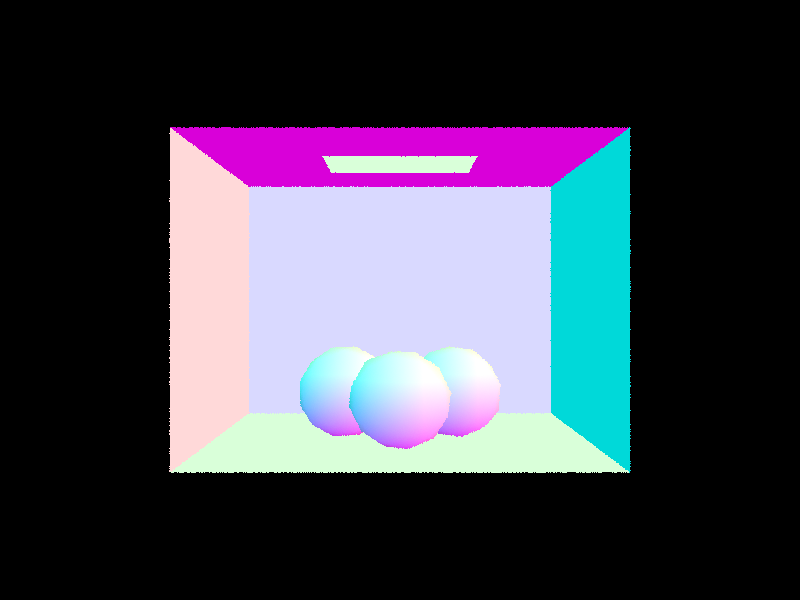
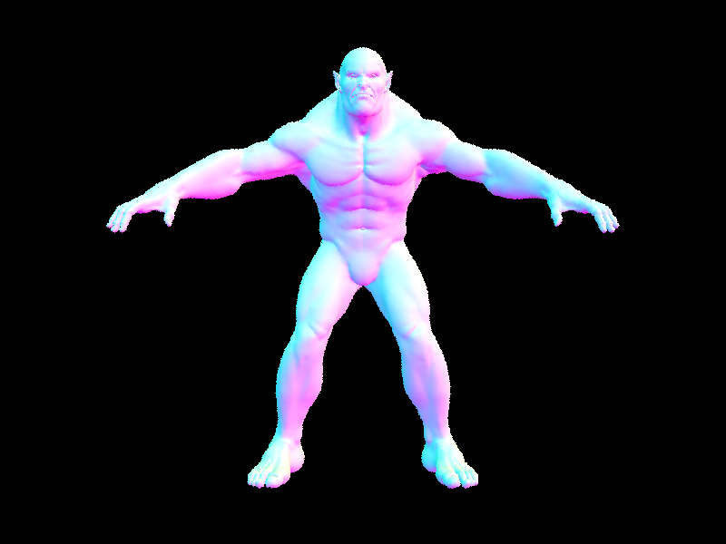
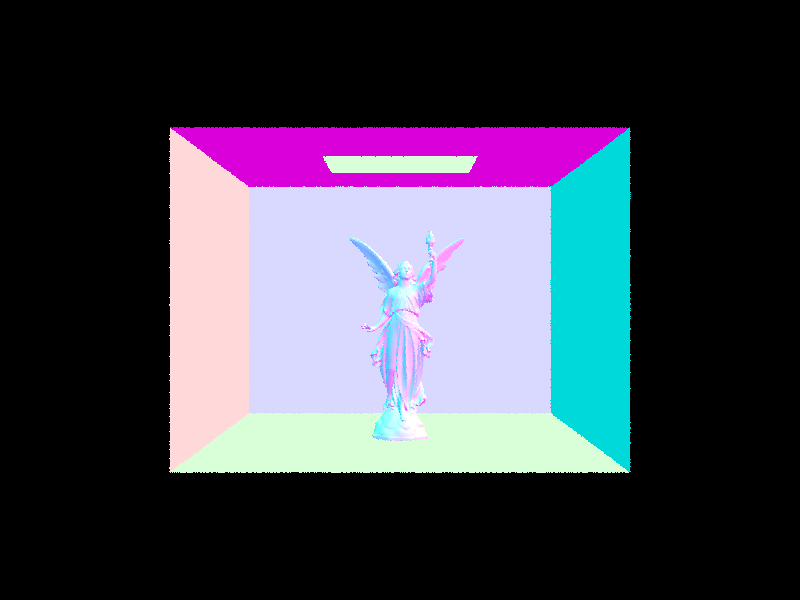

Overview
In this project, we have implemented simple path tracing algorithms. We first implemented simple ray-triangle and ray-sphere intersection. Then, in order to render complex scenes efficiently, we implemented one of the ray tracing acceleration method called Bounding Volume Hierarchy, which splits geometric objects into tree structures to accelerate intersection detection process. In part 3 and 4, we implemented direct illumination and global illumination, which strengthened our knowledge in ray tracing, Monte-Carlo integration, and coordinate transformation. In the last part, we implemented adaptive sampling to calculate more samples only in difficult pixels to maintain algorithm efficiency while still being capable of generating higher quality images.
Work Distribution
Our team distributes work evenly. Yifei is responsible for writing the code of part 1, debugging and modifying part 2 and 3, and reviewing the code in part 4 and 5; while Xuantong is responsible for reviewing part 1 and takes the initiative in writing part 2-5. As for the write-up, both of us are engaged in writing and reviewing all the parts to ensure the deliverable's quality.Part 1: Ray Generation and Intersection
In Part 1, we implemented ray generation and primitive intersection process. In our pipeline, this process is divided into 4 separate tasks: generating rays from camera and represent it in world space; generating pixel samples; calculating intersection between ray and triangles; calculating intersection between ray and spheres.
In the first task, we are given with a normalized position \((x, y)\) in image space. We first convert this image
space position to camera space, then we can get converted point position to be \((-\tan(0.5\times
hFov)+2\times\tan(0.5\times hFov)x, -\tan(0.5\times vFov)+2\times\tan(0.5\times vFov)y, -1)\). So the ray in
camera space starts from \((0, 0, 0)\) and passes through point \((-\tan(0.5\times hFov)+2\times\tan(0.5\times
hFov)x, -\tan(0.5\times vFov)+2\times\tan(0.5\times vFov)y, -1)\). We can then transform this vector into the
world space by times it with c2w matrix and add the result with pos. After normalizing
it, the resulting ray in world space starts at pos and is with unit length.
In the second task, we will generate ns_aa random rays starting from camera origin and passing
different points inside the pixel range \([x, x + 1]\times[y, y + 1]\) with function camera->generate_ray(position.x
/ sampleBuffer.w, position.y / sampleBuffer.h). Then, we would call est_radiance_global_illumination
to get the scene radiance. By averaging the value of scene radiance, we can get the Monte Carlo estimate of the
pixel value.
In the third task, we implemented the ray&triangle intersection with Möller Trumbore Algorithm. This algorithm expresses the intersection point with barycentric coordinates. Assuming that ray \(R\) intersects triangle \(\triangle P_0P_1P_2\), we can write the following equation: \(O + tD = (1-b_1-b_2)P_0 + b_1P_1 + b_2P_2\). By replacing \(P_0, P_1, P_2, O\) with \(E_1, E_2, S\), we can transform the equation as \(S = -tD + b_1E_1 + b_2E_2\). By applying the Cramer's Rule, we can get the final formula showing in the figure below.
|
|
This Möller Trumbore algorithm can minimize the number of multiplications and divisions used in the intersection
calculation process. Inside our implementation, we first follow the Möller Trumbore algorithm to figure out the
value of \(t, b_1, b_2\), when b1 >= 0 && b2 >= 0 && (1 - b1 - b2) >= 0 && t >= r.min_t && t <=
r.max_t, we know that the ray intersects with the triangle. If they intersects, we update the value
of r.max_t and i accordingly.
In the fourth task, we calculate ray&sphere intersection. The intersection occurs at \((O + tD - C)^2 - r^2 =
0\). This formula may have 0, 1, or 2 solutions based on the sign of delta, which is \(((O-C)\cdot D)^2 - D\cdot
D ((O-C)\cdot(O-C)-r^2)\). When the delta is negative, there is 0 intersection, so we will directly return
false. When delta is 0, there is one intersection point, we will judge whether it is between r.min_t
and r.max_t and return true/false accordingly. When there are two intersections, we will choose the
smaller one within the range of r.min_t to r.max_t.
Here we show a few rendering result of small .dae files after we finish part 1.

|

|

|

|
|

|
Part 2: Bounding Volume Hierarchy
In part 2, we implemented Bounding Volume Hierarchy to accelerate the ray tracing algorithm. Bounding Volume Hierarchy is a tree structure splitting geometric objects inside the scene into many small sets that are contained inside bounding volumes. Bounding Volume Hierarchy can help accelerate ray tracing process by checking whether there is intersection with the ray and the bounding volume. If there is no intersection between a bounding volume and the ray, there will also be no intersection between primitives inside the bounding volume and the ray. In this case, we can decrease many useless ray&primitive intersection calculations.
In the first step, we need to construct the Bounding Volume Hierarchy from all the primitives inside the scene.
We will do it recursively. Inside the construct_bvh function, we first count the number of
remaining primitives. If the number of primitives is already smaller than max_leaf_size, we will
stop splitting and directly return a node containing these primitives. If the number of primitives is still
larger than max_leaf_size, it means we have not reached the leaf node, so we still need to split
it. We will perform the split at one of the average centroids along x, y, or z axis. To do so, we will first
calculate the average of (*p)->get_bbox().centroid().x/y/z. Then, among these three splitting
options, we will calculate the cost of them with Surface Area Heuristic and split at the axis with smallest
cost. (Notice here we are not implementing the exact Surface Area Heuristic here, but use the cost function of it to decide the best splitting point among our three options.) After deciding the split point, we will call partition to separate the primitives with centroid smaller than the splitting point and those with centroid larger than the splitting point and go on recursion. If one side has size 0, we will directly return to avoid infinite recursion.
Here is a few rendering results of large .dae files. With the ray tracing acceleration, we can finish the rendering in less than 1 seconds.
|

|
|
|
|

|
|
|
With the help of BVH, we can render large .dae files which was otherwise time-consuming to be rendered. Here we provide a table of detailed runtime comparison of rendering scenes with and without BVH.
| Scene name | # Primitives | Rendering Time Without BVH [s] | Rendering Time With BVH [s] |
|---|---|---|---|
| banana.dae | 2458 | 7.5047 | 0.0385 |
| cow.dae | 5856 | 17.3765 | 0.0509 |
| beetle.dae | 7558 | 23.8531 | 0.0483 |
| CBcoil.dae | 7884 | 24.6637 | 0.0479 |
| CBbunny.dae | 28588 | 89.5754 | 0.0348 |
| bunny.dae | 33696 | 125.3679 | 0.0392 |
| building.dae | 39506 | 120.9778 | 0.0251 |
| peter.dae | 40018 | 136.7215 | 0.0425 |
| dragon.dae | 105120 | 463.5497 | 0.0487 |
We can see that before using BVH to speed up our path tracing process, the runtime approximately scales linearly as the number of primitives inside the scene increases. With the implementation of BVH, all the .dae files can be rendered within 1 seconds, which shows the drastic effect in runtime acceleration.
Part 3: Direct Illumination
- Walk through both implementations of the direct lighting function.
- Show some images rendered with both implementations of the direct lighting function.
- Focus on one particular scene with at least one area light and compare the noise levels in soft shadows when rendering with 1, 4, 16, and 64 light rays (the -l flag) and with 1 sample per pixel (the -s flag) using light sampling, not uniform hemisphere sampling.
- Compare the results between uniform hemisphere sampling and lighting sampling in a one-paragraph analysis.
In Part 3, we implemented zero-bounce illumination and two different methods of one-bounce direct lighting: one is the direct lighting with uniform hemisphere sampling and the other is direct lighting by importance sampling lights. In the following parts, we will work through three function's implementation and show some rendering results.
Zero-bounce Illumination
Zero-bounce illumination is the light directly emitted by the light source and reaches the camera without bouncing off anything primitives. Inside our code, zero-bounce illuminance is obtained by isect.bsdf->get_emission().
Direct Lighting By Uniform Hemisphere Sampling
This method is implemented in estimate_direct_lighting_hemisphere function.
The function estimates the amount of light directly comes from the light sources and arrives at a specific intersection point by sampling incoming light directions uniformly on a hemisphere around the intersection point.
The total amount of samples we pick in this method is num_samples = scene->lights.size() * ns_area_light.
We iterate num_samples times and in each step, we first get a uniform random incoming light direction by
calling w_in = hemisphereSampler->get_sample() function. This function returns a unit direction in object space pointing away from the hit point. Then, we transform it into the world space with wi = o2w * w_in. Next, we construct a ray (target_ray) starting at the reflection point hit_p with direction wi and check whether it will intersect with other objects (at t > EPS_F) by calling bvh->intersect(target_ray, &intersection). After figuring our the intersection point, we can get the radiance of the intersection point with L = intersection.bsdf->get_emission(). Finally, we add L * isect.bsdf->f(w_out, w_in) * cos_theta(w_in) / pdf to the Monte Carlo integral estimator L_i.
Since we iterate the process num_samples times, at the end of the iteration, we divide the estimator L_i by num_sample times to get the unbiased estimation.
|
|
Direct Lighting By Importance Sampling Lights
In uniform hemisphere sampling, it is likely that we will encounter many useless directions without light sources. Direct lighting by importance sampling lights is different from the previous method by sampling only at directions with light sources. In our implementation, we iterate over all light sources. We use is_delta_light() to check if the light is a point light source or not. If it is a point light source, we will set the num_of_sample value to 1 since all ray from a single point will be the same. If it is not, we will set num_of_sample to be ns_area_light. Then, the process will be very similar to that of uniform hemisphere sampling. After getting the sampled direction and creating the corresponding ray emitting from hit point to the light source, we will check if there is any other object between the hit point and the light source (within the range of [EPS_F, distToLight - EPS_F]), if no, then we know the light source casts light onto the hit point. Then, we calculate the average value of (isect.bsdf->f(w_in, w_out) * cos_theta(w_in) * L / pdf) of each light source as L_i, and sum them up to get L_out.
Here is a visual comparison of two direct lighting methods.
|
|
|
The images below are all the same bunny scene with area lights. We render them with 1, 4, 16, and 64 samples per light source and 1 sample per pixel. As we can see from these pictures, the larger the number of samples per light source, the clearer and less noisy the rendered images are. This is because when the number of samples is small, the sampled light source points may gather at a limited range of the entire area light. Thus if there are some blocking objects between the light and the reflection point, the variance of the final result will be very large, so the rendered images will be more noisy. When the number of sample per light becomes larger, there will be a more even distribution of samples, which will create less noise.
|
|
|
|
|
|
Comparison Between Uniform Hemisphere Sampling and Lighting Sampling
The uniform hemisphere sampling is more noisy compared to the lighting sampling when the number of samples is the same. The reason is that inside the environment, light sources are likely to be within a restricted range. While using uniform hemisphere sampling method, we are sampling from a wide range of directions around the reflection point and most of the sampled directions cannot intersect with any light sources, which is useless. Light sampling, on the other hand, directly samples directions where the ray may reach the light sources. By using this method, we avoid calculating many useless rays and only focus on important directions, which will result in less noisy results.
Part 4: Global Illumination
In this part, we mainly work on the at_least_one_bounce_radiance function to realize global illumination effect. Global illumination, unlike direct lighting, considers light rays arriving at the camera pixel with > 1 number of bounces. In our implementation, we first consider two edge cases in which the max_ray_depth is either 0 or 1. If the max_ray_depth is zero, the radiance is already calculated in zero_bounce_radiance, so we will directly return 0. If max_ray_depth is 1, we will return one_bounce_radiance(r, isect) and stop recursion. While the depth is higher, since we need to include at least one level of indirect bounce and we also use Russian Roulette with a 0.65 continuation probability, we will consider the next bounce when coin_flip(continueProb) || r.depth == max_ray_depth holds. This ensures that when coin_flip is smaller than 0.65 or we are at the max ray depth, we will cast a ray from the hit point and then check whether this point intersects. If it is true, then we will have the ray to bounce by a recursive call next = at_least_one_bounce_radiance(bounce, intersection) and add the contribution of the ray to the output with next * cos_theta(w_in) * v / pdf / continueProb.
Here are two scenes rendered with global illumination.
|
|
|
Direct and Indirect Light
The direct light image is the rendering result including only zero-bounce and one-bounce illumination, while the indirect light image includes only > 1 bounce illumination. In the direct lighting image, the light source itself and the part of the scene directly under the light is very bright, while the other parts are darker. In the indirect lighting image, the entire scene except the light source have dim and smooth brightness.
|
|
|
Comparing Rendered Views with Different max_ray_depth
As the maximum of ray depth increases, the bounces of the rays increases. The resulting images will get brighter and more realistic. To be more specific, with max ray depth 0, the rendering result only has the light source. With max ray depth 1, the rendering result is the same as that of direct illumination. After including more bounces of illumination, the floor of the scene starts to get brighter and the entire image is closer to real scenarios.
|
|
|
|
|
|
|
Comparing Rendered Views with Various sample-per-pixel Rates
We rendered the following images with max depth 2 and 4 light rays. We can see that as the number of sample-per-pixel rates increases, the noise gets smaller. The reason is that as sample-per-pixel increases, we are averaging more sampling results of radiance values for each pixel, so the variance of the result will be smaller, thus the noise is smaller.
|
|
|
|
|
|
|
|
|
|
Part 5: Adaptive Sampling
- Walk through your implementation of the adaptive sampling.
- Pick one scene and render it with at least 2048 samples per pixel. Show a good sampling rate image with clearly visible differences in sampling rate over various regions and pixels. Include both your sample rate image, which shows your how your adaptive sampling changes depending on which part of the image you are rendering, and your noise-free rendered result. Use 1 sample per light and at least 5 for max ray depth.
Adaptive sampling avoids the large amount of noise by using a fixed number of samples per pixels, and focusing
the samples
on the difficult parts of the images. The implementation is still done in a iteration of
num_samples steps.
We use an algorithm to calculate the convergence of the pixels as we trace ray samples through it.
After getting the illumination of samples, we keep track of them and to sum all of them to calculate the mean
and variance by
s1 = s1 + illuminance and s2 = s2 + pow(illuminance, 2).
After getting the mean and variance, we use them to calculate the convergence by the formula convergence =
1.96 * sqrt(variance) / sqrt(count).
|
|
|
|